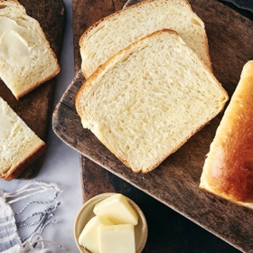

← All recipes
Japanese Milk Bread

Servings: 16 · Prep: 30 min · Cook: 35 min
Ingredients
- 3 tablespoons (43g) water
- 3 tablespoons (43g) milk, whole preferred
- 2 tablespoons (14g) King Arthur Unbleached Bread Flour
- 2 1/2 cups (300g) King Arthur Unbleached Bread Flour
- 2 tablespoons (14g) King Arthur Baker's Special Dry Milk or nonfat dry milk
- 1/4 cup (50g) granulated sugar
- 1 teaspoon (6g) table salt
- 1 tablespoon instant yeast
- 1/2 cup (113g) milk, whole preferred
- 1 large egg
- 4 tablespoons (57g) unsalted butter, melted
Directions
- To make the tangzhong: Combine all of the ingredients in a small saucepan, and whisk until no lumps remain.
- Place the saucepan over low heat and cook the mixture, whisking constantly, until thick and the whisk leaves lines on the bottom of the pan, about 3 to 5 minutes.
- Transfer the tangzhong to a small mixing bowl or measuring cup and let it cool to lukewarm.
- To make the dough: Weigh your flour; or measure it by gently spooning it into a cup, then sweeping off any excess. Combine the tangzhong with the remaining dough ingredients, then mix and knead — by mixer or bread machine — until a smooth, elastic dough forms; this could take almost 15 minutes in a stand mixer.
- Shape the dough into a ball, and let it rest in a lightly greased bowl, covered, for 1 to 1 1/2 hours, until puffy but not necessarily doubled in bulk.
- Gently deflate the dough and divide it into four equal pieces; if you have a scale each piece will weigh between 170g and 175g.
- Flatten each piece of dough into a 5" x 8" rectangle, then fold the short ends in towards one another like a letter. Flatten the folded pieces into rectangles again (this time about 3" x 6") and, starting with a short end, roll them each into a 4" log.
- Place the logs in a row of four — seam side down and side by side — in a lightly greased 9" x 5" loaf pan.
- Cover the loaf and allow it to rest/rise for 40 to 50 minutes, until puffy.
- Towards the end of the rising time, preheat the oven to 350°F.
- To bake the bread: Brush the loaf with milk and bake it for 30 to 35 minutes, until it's golden brown on top and a digital thermometer inserted into the center reads at least 190°F.
- Remove the loaf from the oven and cool it in the pan until you can transfer it safely to a rack to cool completely.
- Store leftover bread, well wrapped, at cool room temperature for 5 to 7 days; freeze for longer storage.
Original source: kingarthurbaking.com